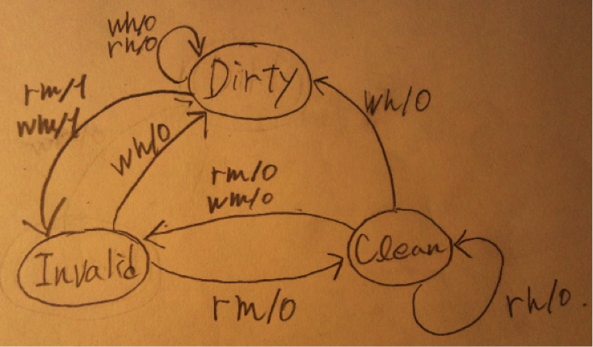

主記憶は大容量であるがアクセス速度がCPUの処理速度とでは比較的遅いため、どれだけCPUが高速でも低速な主記憶がボトルネックとなってしまう。そこで高速であるが小容量という特徴を持つキャッシュメモリをCPUと主記憶の間に挟むことで、擬似的に高速かつ大容量であるメモリを実現する。
・ダイレクトマッピング方式
メモリ上のそれぞれのブロックが、キャッシュ上で１つのみの場所に対応する方式。
・セットアソシアティブ方式
メモリ上のそれぞれのデータが、キャッシュ上で連想度分の場所に対応する方式。例えば連想度が４であれば、メモリ上のデータそれぞれが、キャッシュ上で４つの場所に対応する。
・フルアソシアティブ方式
メモリ上のそれぞれのデータが、キャッシュ上の全ての位置に対応する方式。
キャッシュからキャッシュブロックがキャッシュアウトされる際にメモリに書き込む方式。
キャッシュに書き込む度にメモリに同一の内容を書き込むライトスルー方式では、書き込み時に毎回メモリアクセスが発生するため、キャッシュメモリの高速性を活かすことが出来ない欠点を解消する方法。しかしながらキャッシュアウトのオーバーヘッドはライトスルー方式よりも大きくなる。
状態：Invalid , Clean , Dirty
入力
rh : リードヒット。キャッシュ上に対応する読み込みデータが存在。
wh：ライトヒット。キャッシュ上に対応する書き込みデータが存在。
rm：リードミス。キャッシュ上に対応する読み込みデータが存在しない。主記憶から読み出す。
wm：ライトミス。キャッシュ上に対応する書き込みデータが存在しない。主記憶から読み出す。
出力
WB：キャッシュライン上のデータを主記憶に書き込む必要がある場合に１とする。

ホスト名をもとに、そのホストのIPアドレスを返すサービス。例えばWebサイトにアクセスする場合、URLからDNSサーバーに登録された情報をもとにwebサーバーのIPアドレスを返してもらうことでアクセスすることが可能となる。
伝送速度：一定時間内に転送可能な情報量。bps(bit per second)は１秒間に転送可能なビット数を示す。
変調速度：１秒間に行われる変調回数。
（変調：ディジタル信号→アナログ変換）
１回の変調で伝送出来るビット数をnとすると、
伝送速度（bps） ＝ 変調速度(baud) * n で表すことが可能。
波長分割多重方式。波長の異なる複数の光信号を重ねて１本の光ファイバーで伝送するための多重方式。１本のケーブルで送信と受信が可能。
検索対象のキーをハッシュ関数に引数として渡すことによって、理想条件下ではO(1)で検索をすることが可能。
分割統治法によるソートアルゴリズム。
データを等分に分割し複数のグループに分けた後、グループ内でソートし、他のグループとマージ（結合）処理を再帰的に行うことによってO(n log n)でソートすることが可能。